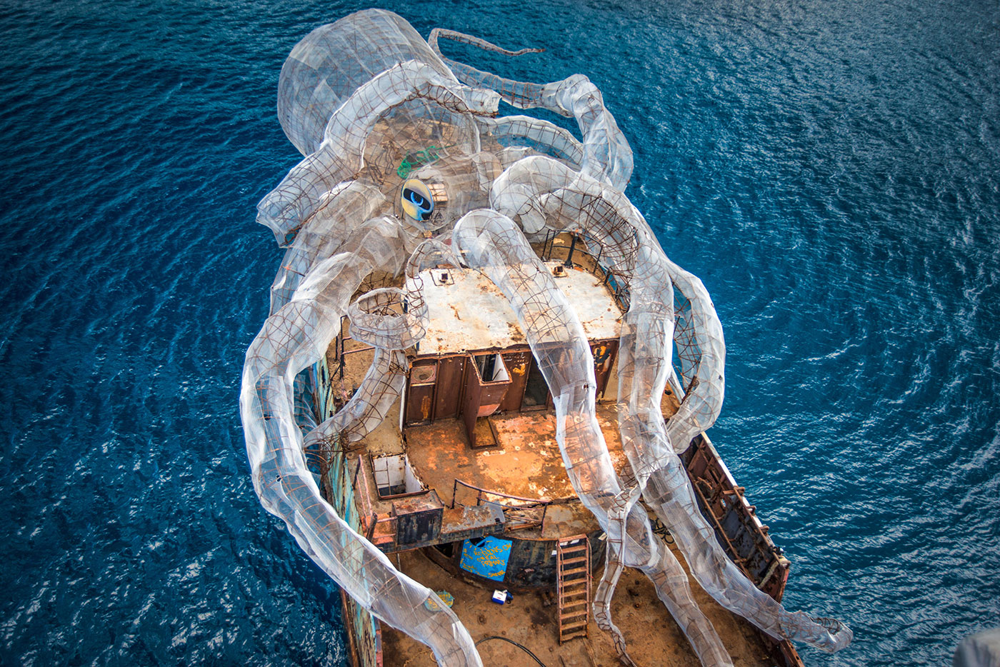
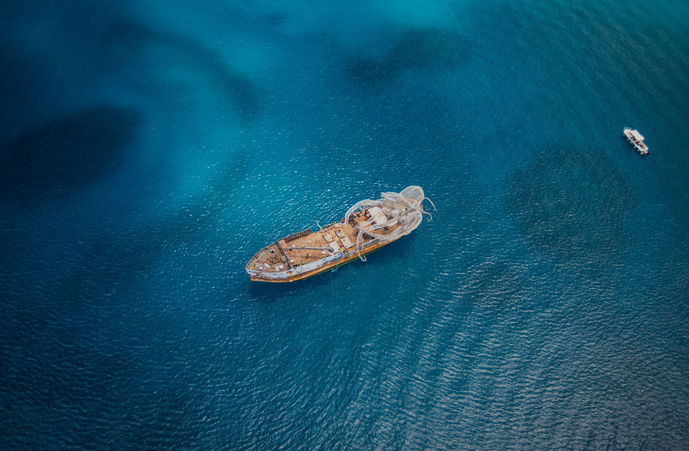
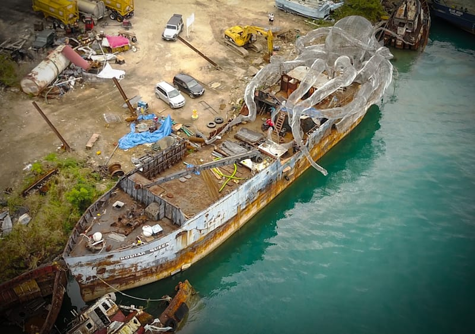
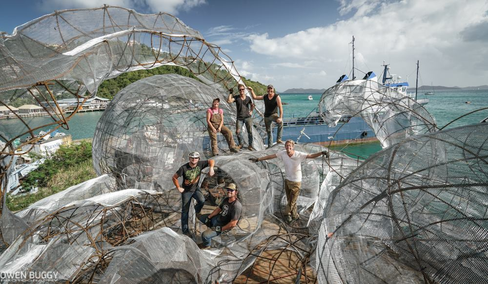
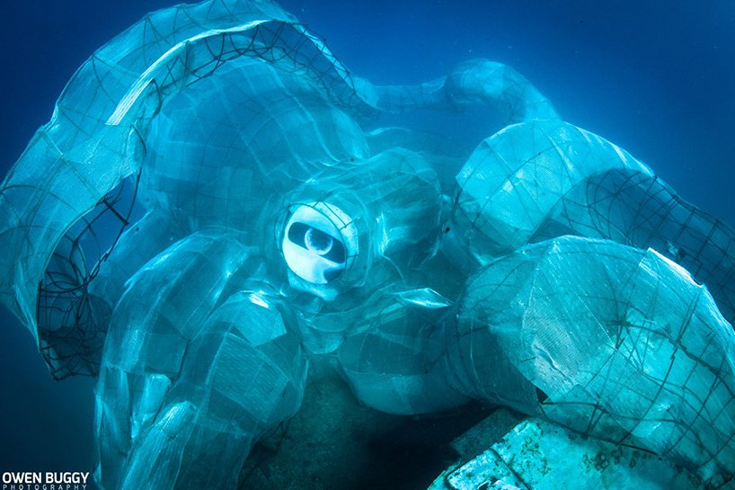
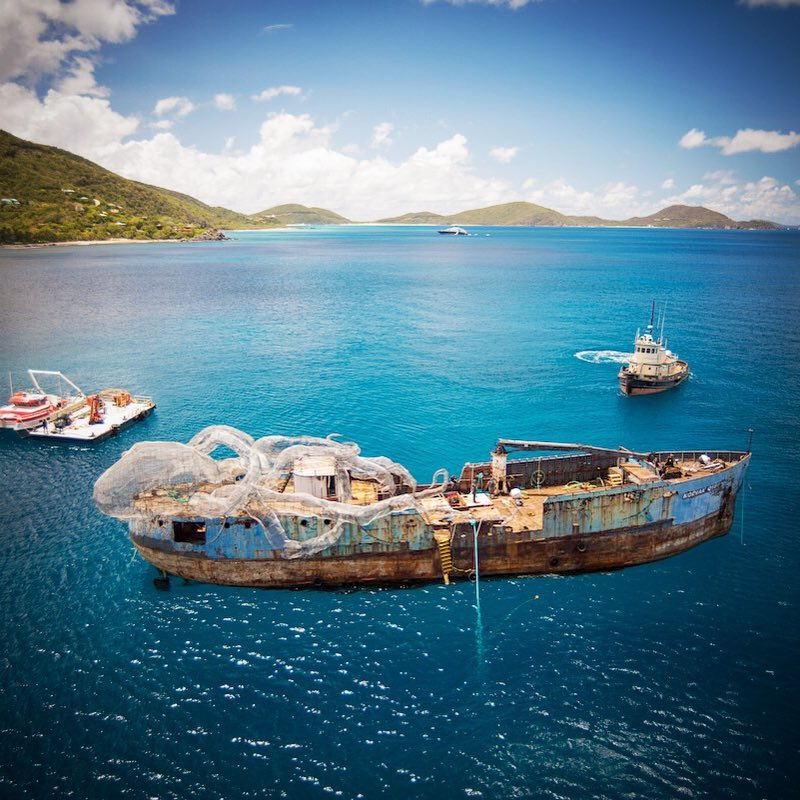

El mejor barco de guerra es el que se hunde
escrito por: uri o'callaghan /inspiredby magazine of arts and culture editor /03 min read
Cuenta la historia que una vez, la flota de Alejandro Magno tuvo que colocarse en formación de batalla porque la enorme cantidad de atunes con la que se encontraron de golpe en el Mediterráneo hacía imposible que un barco aislado pudiera abrirse camino. El mejor barco de guerra es el que se encuentra hundido.
Un antiguo barco de guerra estadounidense, uno de los cinco que quedaron a flote tras el ataque de Pearl Harbor, ha sido hundido en las Islas Vírgenes Británicas para crear una obra de arte submarina a la vez que un arrecife artificial destinado a la recuperación del fondo marino. El proyecto es el resultado de la intersección de arte, biología, historia, submarinismo, protección marítima y economía en un mismo equipo.

Fotografía de Owen Buggy
En 2012, el historiador Mike Cochran encontró abandonado en un desguace de las Islas Vírgenes Británicas uno de los cinco buques de guerra que sobrevivieron al ataque de Pearl Harbor. Consciente de que un barco con tanta importancia histórica no podía convertirse en chatarra, intentó contactar por email con instituciones, organizaciones e individuos con la esperanza de obtener ayuda para poder preservar este icónico barco.

Fotografía de Owen Buggy
Owen Buggy, fotógrafo, ingeniero naval y empleado del multimillonario Richard Branson, se hizo eco de la noticia y propuso a Branson la restauración del barco. Junto a un grupo de artistas, emprendedores, buceadores y gente con ganas de formar parte de un divertido proyecto, decidieron convertir el barco en una instalación artística submarina que al mismo tiempo sirviera de arrecife artificial para el frágil ecosistema marino.

Fotografía de Owen Buggy
A su vez, el proyecto pretendía, en todo momento, poner en relevancia su dimensión local. Uno de sus objetivos principales era potenciar la economía local a partir de la instalación artística, visibilizando las Islas Vírgenes Británicas como un destino internacional para los amantes del buceo. El arrecife artificial serviría para promover un nuevo hábitat para las especies marítimas locales, así como para concienciar a la gente sobre el cambio climático y la preservación de nuestros océanos.

Fotografía de Owen Buggy
Durante las tareas de mantenimiento y reparación del barco, el conjunto de artistas diseñó un gigantesco pulpo de 24 metros, como guiño al popular mito del Kraken, para instalarlo en la cubierta trasera. Además, se acondicionó la zona interior del barco para que los futuros buceadores pudieran entrar y salir por diferentes sitios.

Fotografía de Owen Buggy
La escultura está revestida por una malla diseñada para que los animales marinos se instalen en ella. A su vez, es importante que el sitio despierte interés por el medio acuático, de forma que el visitante pueda experimentar una nueva relación con la vida marina que le convenza de la necesidad de preservar estos hábitats.

Fotografía de Owen Buggy
Partiendo de una iniciativa para hacer honor a la historia, se creó un proyecto multidisciplinar dedicado a la conservación de la vida marina, el arte, el estudio de los arrecifes locales, la concienciación frente el cambio climático y la economía local de las islas.
Tráiler del documental The Kodiak Queen, del cineasta Rob Sorrenti
El cineasta Rob Sorrenti produjo un documental de corta duración (galardonado con diferentes premios internacionales) sobre el proceso de creación del proyecto. Desde la redacción recomendamos su visualización porque puede ser realmente inspirador para crear futuros grandes proyectos.
Documental The Kodiak Queen, del cineasta Rob Sorrenti
De la misma forma, a continuación hemos recogido un conjunto de enlaces interesantes en relación con el proyecto para echar una ojeada en caso de que os haya parecido interesante.

En Inspired By Magazine creemos en la libre circulación de ideas y por eso, nuestros artículos están disponibles para su republicación libre, con la única condición de citar a sus autores y notificarles la republicación. Para más información, oriolocallaghan@gmail.com
Compartir artículo en:
Enlaces:
Perfil de Facebook del proyecto, en el que se recopila todas las fotos del proceso de construcción y diseño.
Brandson, Richard. (2018). Rescuing the Kodiak Queen, Virgin
Brandson, Richard. (2017). Sinking a WWII ship to create an underwater art reef, Virgi
Rob Sorrenti Film. THE KODIAK QUEEN DOCUMENTARY.
Cochran, Mike. 2013. Saving the YO-44.